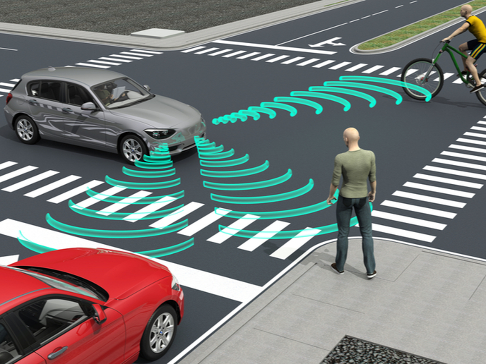

Yi, Zeji (易泽吉)
I am a Master student at School of Aerospace Engineering, Tsinghua University,
working in LNS Group under NERCN.
My research interest lies in the intersection of control, learning, and optimization.
I aim to design safe and robust autonomous systems with trustworthy learned modules or other optimization and
statistical tools.
I received a B.S. degree in the School of Aerospace Engineering from Tsinghua University.
|
|
Contact
-
Email: yizj20@mails.tsinghua.edu.cn
Scholarship
|
● Graduate with Honor: Tsien Excellence in Education Program |
2020 |
|
● Tsinghua Academic Excellence Scholarship (Top 10%) |
2018,2019 |
|
● Second Class Prize of China Undergraduate Mathematical Contest in Modeling |
2017 |
|
● First Class Prize of Chinese Physics Olympiad (CPHO) (Top 2%) |
2016 |
|
● Tsinghua-Xuetang Scholar for Excellent Foster Innovative Talent |
2016-2018 |
Publications
Nonlinear Covariance Control via Differential Dynamic ProgrammingZeji Yi, Zhefeng Cao, Evangelos Theodorou, and Yongxin Chen We consider covariance control problems for nonlinear stochastic systems. Our objective is to find an optimal control strategy to steer the state from an initial distribution to a terminal one with specified mean and covariance. This problem is considerably more complicated than previous studies on covariance control for linear systems. We leverage a widely used technique - differential dynamic programming - in nonlinear optimal control to achieve our goal. In particular, we adopt the stochastic differential dynamic programming framework to handle the stochastic dynamics. Additionally, to enforce the terminal statistical constraints, we construct a Lagrangian and apply a primal-dual type algorithm. Several examples are presented to demonstrate the effectiveness of our framework. |
|

|
High-dimensional Optimistic Safe Optimization with Projection to Distance-preserving, Quasi-physical SpacesZeji Yi, Yunyue Wei, Hongda Li, Yanan Sui Many real-life sampling problems are high-dimensional and require safety guarantee during optimization. Current safe exploration algorithms ensure safety by conservatively expand- ing the safe region, leading to inefficiency in large-scale input settings. In this paper, we propose a practical method, which utilizes auto-encoder to link physical prior of certain problems with index-based input space and also projects the original input space into a low-dimensional subspace. The low-dimensional space can be viewed as a quasi-conformal transformation of space with explicit physical meaning. An optimistic safe strategy to effi- ciently optimize the utility function is carried in the low-dimensional space then. We show in simulation that our method outperforms representative safe exploration algorithms while sacrificing little safety. Clinically, our proposed method also achieved better or competitive performance on two high-dimensional neural stimulation optimization tasks comparing to human experts. |
 |
Improving sample efficiency of high dimensional bayesian optimization with MCMC on approximated posterior ratioZeji Yi, Yunyue wei, Cloris Cheng, Kaibo He |
A Remote Adaptive Upper-Limb Training Framework With Collaborative RobotJun Hong Lim, Zeji Yi, Kaibo He, Chen Hou, Yanan Sui |
Research Experience
Adversarial learning of control parametersAdvisor: ChuChu Fan, Assistant Professor at Department of Aeronautics and Astronautics, MIT
● Generating rare/unsafe cases with one or two order larger probability compared with the original
environment |
|
 |
High-Dim Bayesian Optimization with MCMC, Beijing, ChinaAdvisor: Yanan Sui, Associate Professor at School of Aerospace, THU
● Significantly improved the efficiency of Bayesian optimization on high dimensional space on synthetic
functions and RL benchmarks compared to current SOTA algorithm |
Coactive learning for dueling bandits, Beijing, ChinaAdvisor: Yanan Sui, Associate Professor at School of Aerospace, THU, and Yisong Yue, Professor of Computing
and
Mathematical Sciences at CalTech
● Proposed a new exact regret bound to replace the original asymptotic analysis of convergence |
|
Machine Learning assisted Spinal Cord Stimulation, Beijing, ChinaAdvisor: Yanan Sui, Associate Professor at School of Aerospace, THU
● Proposed and designed a data-driven System for Spinal Cord Stimulation (Data collecting, Pre-processing)
|
|
Covariance Steering and Differential-Dynamic-Programming, Atlanta, GA, USAdvisor: Yongxin Chen, Assistant Professor at School of Aerospace Engineering, GaTech
● Proposed a covariance steering method for nonlinear stochastic system |
|
 |
Grasping Objects with Robot-arm Carried by Quadrotors, Beijing, China | Project LeaderAdvisor: Geng Lu, Assistant Professor at School of Control Science, THU
● Built a dynamical model for the highly coupled arm-quad system with multi rigid body dynamics and gained
the forward and inverse dynamics solution |
|  |
Interactive Scenario in Autonomous Vehicle, Berkeley, CA, US | Research AssistantAdvisor: Masayoshi Tomizuka, Professor at School of Mechnical Engineering, UCB
● Independently constructed a sequential strategy capable of handling multi interactive agents under
information symmetric and asymmetric conditions based on Monte-Carlo method |
Building and Controlling Quadruped Robot, Beijing, China | Research AssistantAdvisor: Ou Ma, Professor at School of Aerospace, THU
● Designed and optimized the configuration of the robot's legs, lowered the maximum torque during walking by
20% and expanded the workspace of each leg by 30% |